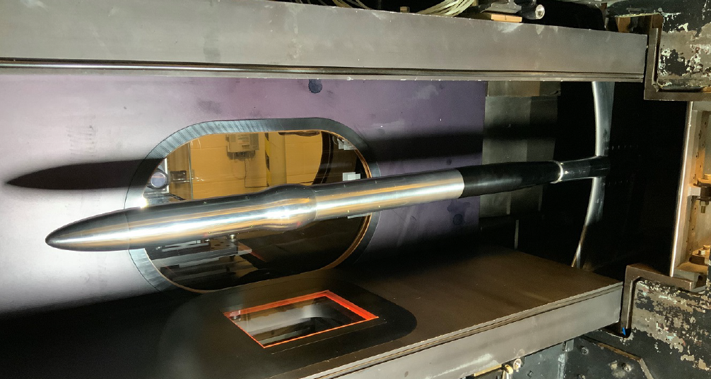

Public Access (formerly Langley Research Center)Turbulence Modeling Resource |
Exp: Sandia Axisymmetric Transonic Bump (revisiting Bachalo-Johnson)
Return to: Data from Experiments - Intro Page
Return to: Turbulence Modeling Resource Home Page
The information on this page was provided by
Matthew Barone.
Sandia National Labs undertook to
experimentally revisit the classic Bachalo-Johnson axisymmetric transonic bump experiment (see:
ATB: Axisymmetric Transonic Bump).
This constitutes an experimental characterization of transonic, turbulent, separated flow generated by an axisymmetric model.
The test case was also issued as a "CFD challenge."
The model is a scaled version of the geometry in Bachalo and Johnson, AIAA J. (1986), consisting of a circular bump
on a constant-diameter cylinder aligned with the flow. The flow is turbulent approaching the hump and becomes locally
supersonic at the apex. This leads to a shock-wave/boundary-layer interaction, a turbulent separation bubble, and
flow reattachment downstream. Tunnel boundary conditions are characterized and mean surface pressure, mean skin
friction, and both mean and fluctuating velocity fields are measured throughout the interaction region.
Documentation can be found in (the first journal artricle reference supercedes the earlier AIAA papers):

Details about the experimental data can be found in the
first reference listed above. The following table (taken from the reference) lists the tunnel boundary conditions.
Rows in grey correspond to derived quantities that should be used for reference only.
The experimental data are provided in
the following file:
Return to: Data from Experiments - Intro Page
Recent significant updates:


02/21/2025 - Added latest journal article reference
Page Curators: Christopher Rumsey,
Ethan Vogel,
Clark Pederson
Last Updated: 04/08/2025